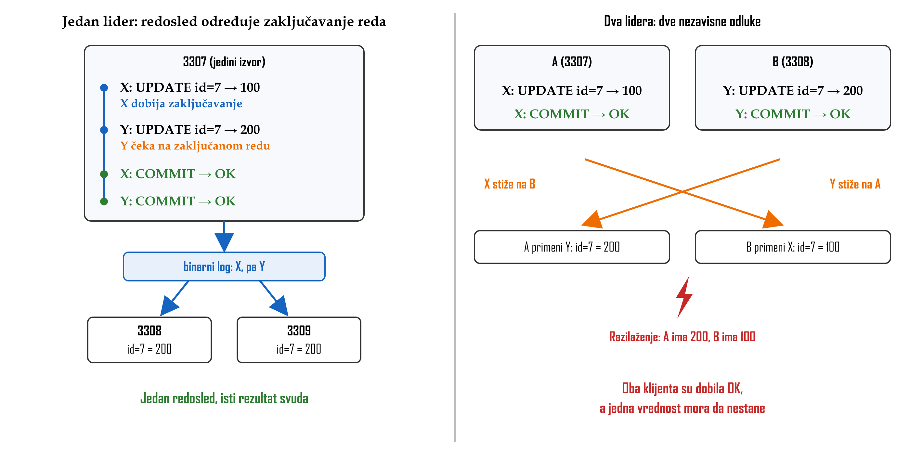
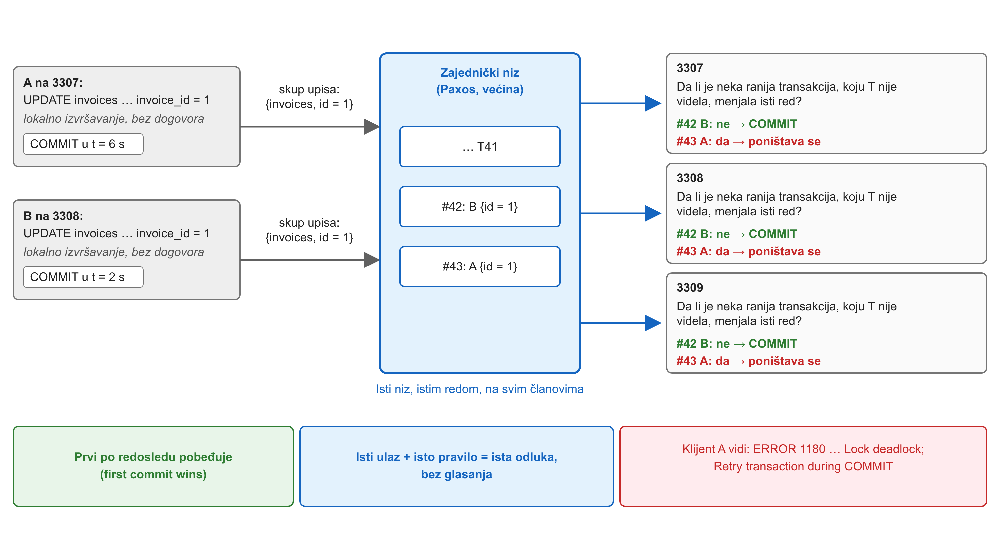
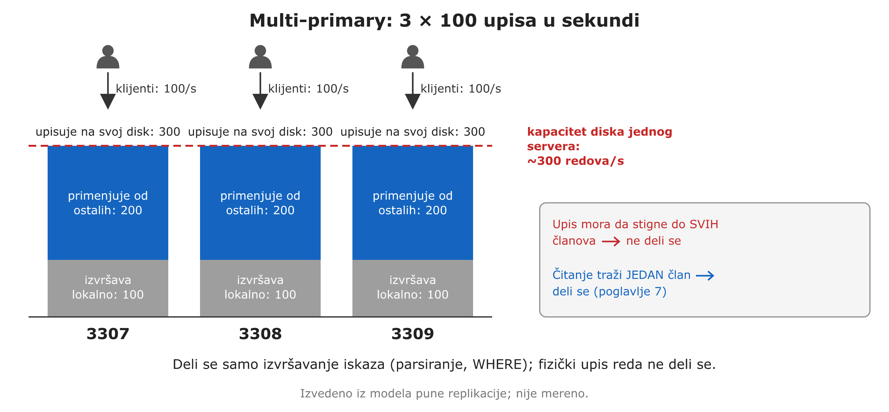
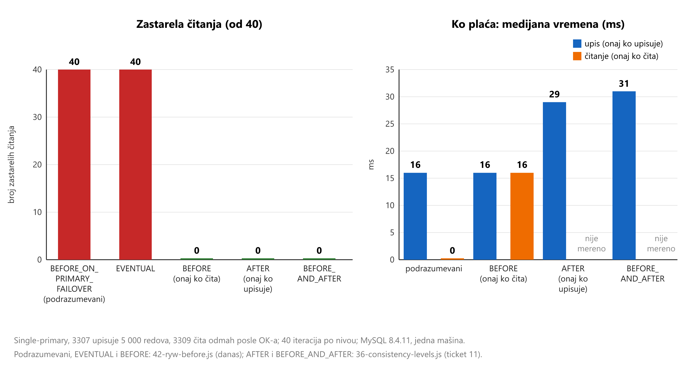

![Vrh: 3307 zelen, ostao sam, 1 od 3, nema većine; 3308 i 3309 precrtani, proces ubijen. Vremenska linija za 3307: SELECT COUNT(*) FROM patients vraćen za 39 ms; INSERT INTO heartbeat u 14:40:56 blokiran, niti komitovan niti greška, i posle 30 s i dalje blokiran, pa se nastavlja isprekidano do plave linije operator forceQuorumUsingPartitionOf(3307) oko 14:42, posle koje postaje zelen: komitovan, red 16809, ts 14:40:56. Treća traka: SELECT traženog reda iz druge sesije vraćen za 28 ms sa 0 redova. Upozorenje alata o split brain-u. Dole: čitanja dostupna, upisi blokirani, razilaženja nema.](../viz/viz-l05-gubitak-kvoruma-1792770012847.png)
32-quorum-loss.ps1, 33-force-quorum.js); vremenska osa nije u razmeri.Lekcija 05 · Poglavlje 5 (Group Replication)
Lekcija 04 je pokazala da semisinhrona potvrda ne znači da je „većina ima“. Ova lekcija pokazuje mehanizam u kome komitovanje zaista znači da je većina primila transakciju: certification nad zajedničkim nizom, kvorum koji manjinu blokira umesto da je pusti da se razilazi, i podešavanje koje određuje ko plaća vidljivost.
group_replication_consistency sa modelom iz poglavlja 2 i kažeš ko plaća cenu.
InnoDB zaključava svaki red koji transakcija menja i drži to zaključavanje do COMMIT-a ili
ROLLBACK-a. Kad dve transakcije žele isti red, zaključavanje dobija samo jedna, a druga
čeka. Redosled je zato odluka jednog servera, doneta u trenutku
zaključavanja. Ona ulazi u binarni log tim redom, a replike je samo izvršavaju
(lekcija 02). Replike nemaju šta da biraju.
Kod više lidera ta pretpostavka prestaje da važi. Zaključavanje postoji samo unutar jednog servera, pa dva servera mogu nezavisno da odluče o istom redu i obe odluke potvrde klijentima. Sukob kod više lidera nastaje zato što je odluka o redosledu doneta na dva mesta i potvrđena pre dogovora. Pravilo „poslednji upis pobeđuje“ ne rešava problem, nego samo određuje koji potvrđeni upis nestaje. Jedini izlaz je da se čvorovi dogovore o redosledu pre nego što klijentu vrate OK.

Group Replication ne šalje transakcije direktno sa člana na člana. Predaje ih komunikacionom sloju koji ih isporučuje svim članovima, istim redom:
Taj sloj je XCom, „a Paxos variant“ (§20.3.2): većina prihvata svaku poruku i dodeljuje joj mesto u nizu. To je konsenzus-kvorum iz poglavlja 2.
Transakcija se izvršava lokalno, bez dogovora. Na COMMIT-u član u
poruku grupi upisuje njen skup upisa (write-set), odnosno jedinstvene identifikatore
redova koje je izmenila. Kad dođe do T u nizu, svaki član postavlja isto pitanje: da li je neka
transakcija ranija u nizu, koju T nije videla, menjala isti red? Ako jeste, T se poništava
svuda, a ako nije, komituje se svuda. Ovaj postupak je certification (provera
saglasnosti transakcija). Svi članovi dolaze do iste odluke bez glasanja, jer imaju
isti niz i primenjuju isto determinističko pravilo.
„Prvi“ znači prvi u nizu, a ne prvi po satu, niti onaj ko je ranije otvorio
transakciju: grupa za transakciju saznaje tek na njenom COMMIT-u.

34-conflict-pair.ps1.| primarni ključ je obavezan | bez identifikatora reda nema skupa upisa, pa ni provere saglasnosti; upis u tabelu bez primarnog ključa se odbija |
| sukob na nivou reda | dve transakcije u istoj tabeli dolaze u sukob samo ako dele red |
| greška nije „certification failed“ | poraženi klijent vidi ERROR 1180 … 'Lock deadlock; Retry transaction' during COMMIT i mora da ponovi transakciju |
Treća stavka je izmereni nalaz, a ne nešto što se izvodi iz mehanizma. Transakcija
koja je prošla proveru stiže na član gde poražena još drži lokalno zaključavanje reda, ima prednost, pa
se poražena lokalno poništava pre nego što uopšte pošalje svoj skup upisa. Zato
COUNT_CONFLICTS_DETECTED ostaje 0. Refman ne opisuje grešku koju klijent vidi, pa je izvor
četvrti stepenik lestvice izvora: MySQL bug 78705 „Improve Client Error For Certification Failures“.
Greška 3101 (ER_TRANSACTION_ROLLBACK_DURING_COMMIT) nije se javila ni u jednom od pet
merenja (ticket 11 i danas).
poliklinika.invoicesPreduslov: topologija je podignuta (examples\00-setup\topology.ps1 start)
i prebačena u stanje grupe, pa u multi-primary režim. Skripta upisuje u redove 1 i 2 tabele
invoices, pa ih posle vrati (+1099 na red 1, +999 na red 2). Na kraju obavezno pokreni
19-gr-down.ps1.
cd 'examples\01-group-replication' $msh = 'C:\mysql-repl\tools\mysql-shell-8.4.10-windows-x86-64bit\bin\mysqlsh.exe' & $msh --js --no-wizard --file 10-gr-up.js # async -> cluster & $msh --js --no-wizard --file 34a-to-multi-primary.js .\34-conflict-pair.ps1 # same row, then different rows & $msh --js --no-wizard --file 41-no-pk-live.js # PK-less table: created, write refused, dropped
same row: A(3307) ERROR 1180 (HY000) ... 'Lock deadlock; Retry transaction' during COMMIT
B(3308) B COMMIT returned -> the same value on 3307, 3308 and 3309
different rows: A COMMIT returned / B COMMIT returned -> both values on all three members
COUNT_CONFLICTS_DETECTED stays 0
no_pk_demo: INSERT refused: The table does not comply with the requirements by an external plugin.
(ERROR 3098); checkInstanceConfiguration: status = error, then ok after DROP
Kako se ovo čita: pobeđuje B, koja je prva u nizu, iako je A otvorena ranije. Različiti redovi u istoj tabeli ne izazivaju sukob. Tabela bez primarnog ključa može da se napravi, ali ne i da se menja, jer bez identifikatora reda nema skupa upisa.
Transakcija se komituje tek kad dobije mesto u nizu, a to mesto dodeljuje većina. Iz toga sledi da član koji ne može da dosegne većinu ne može ni da komituje, bez obzira na to da li je primarni čvor. Primarni čvor određuje gde se upisi prihvataju, ali ne odlučuje sam da li je upis komitovan. Pošto se svake dve većine seku, najviše jedan deo mreže može da komituje. Zato nema split brain-a (razdvajanja grupe na dve nezavisne celine): manjina blokira umesto da se razilazi.
32-quorum-loss.ps1, 33-force-quorum.js); vremenska osa nije u razmeri.group_replication_unreachable_majority_timeout = 0 | podrazumevano: manjina čeka zauvek. Ako se zada broj sekundi, blokirane transakcije se po isteku poništavaju, a član prelazi u ERROR (refman). To je projektna odluka, ne nešto što se izvodi. |
| uredno gašenje ≠ pad | član koji se uredno ugasi javlja grupi da odlazi, pa se većina računa od manjeg broja članova. Gubitak kvoruma se pokazuje samo ubijanjem procesa. |
| čitanje u manjini | izvršava se nad lokalnim podacima, koji mogu biti zastareli ako većina negde drugde i dalje prima upise |
Single-primary je podrazumevani režim (group_replication_single_primary_mode = ON).
Svi upisi idu na jednog člana, pa ih raspoređuje njegovo lokalno zaključavanje (koren iz dela 1), i u
niz stižu već raspoređeni. Izbor novog primarnog čvora je automatski: „If the existing primary leaves
the group, whether voluntarily or unexpectedly, a new primary is elected automatically“
(§20.1.3.1).
U poređenju sa asinhronom replikacijom treba biti precizan. Refman opisuje Asynchronous Connection Failover, koji automatski preusmerava vezu replike na drugi izvor sa spiska (§19.4.9), ali ga ne opisuje kao unapređenje replike u izvor. Ovo je provereno na prvom stepeniku lestvice izvora. Razlika je dakle u tome ko unapređuje novi izvor, a ne u tome da li „automatika“ postoji.
Multi-primary ne povećava propusnost upisa srazmerno broju članova, jer je svaki
član pun primerak baze i mora fizički da upiše svaki red. Deli se samo izvršavanje iskaza. Jedina
prava korist je upis na bilo kom članu u svakom trenutku. Cena su poništavanja na
„vrućim“ redovima, logika ponavljanja u aplikaciji, i ograničenja iz
§20.3.2:
SERIALIZABLE se odbija, strani ključevi sa CASCADE nisu podržani, a
istovremeni DDL i DML nad istim objektom sa različitih servera nisu podržani.

Zaključak (ocena iz memoa 05, ovde izvedena): multi-primary se isplati samo kad je dostupnost upisa na svakom članu najvažnija i kad su sukobi retki, odnosno kad različiti članovi menjaju različite redove. Refman takvu preporuku ne daje izričito: stranice o režimima i ograničenjima su proverene, i to je naš zaključak, a ne citat.
Klijent dobija OK kad transakcija dobije mesto u nizu i prođe proveru saglasnosti. Za to je dovoljno da je većina primila poruku. Primena na svakom članu je poseban korak, koji niti primene obavljaju posle odluke. To je ponovo odluka ≠ vidljivost iz lekcije 04. Odluka je sada sigurna, jer je većina ima, ali vidljivost na sekundarnom članu i dalje kasni za njom. Čitanje sa sekundarnog člana odmah posle OK-a zato krši read-your-writes.
Prozor se zatvara samo tako što neko čeka, a mesta za čekanje postoje samo dva:
onaj ko upisuje čeka da svi primene upis (AFTER), ili onaj ko čita čeka da se primeni sve
što je u nizu pre njegovog čitanja (BEFORE). Nivo važi za transakciju i
može se postaviti za sesiju, što je projektna odluka.
![Tri reda sa zajedničkom vremenskom osom, svaki sa trakom za 3307 (onaj ko upisuje) i 3309 (onaj ko čita). EVENTUAL ili podrazumevani: COMMIT, većina primila i redosled, OK; na 3309 primena 5 000 redova traje i posle OK-a, a SELECT koji stigne tada ne vidi red; zagrada odluka ≠ vidljivost; 40/40 zastarelih. AFTER: posle odluke onaj ko upisuje čeka da svi primene, tek onda OK; SELECT posle toga vidi red; upis 16 → 29 ms. BEFORE: OK odmah; SELECT stiže u isto vreme kao u prvom redu, ali čeka prethodne transakcije do kraja primene, pa vidi red; čitanje 0 → 16 ms.](../viz/viz-l05-ko-ceka-1792770079692.png)
AFTER čeka onaj ko upisuje, a kod BEFORE onaj ko čita. Cena je u oba slučaja
približno vreme primene. Brojevi su iz Slike 6.Taj podrazumevani nivo štiti samo od zastarelih čitanja na novom primarnom čvoru
posle failover-a. Dok primarni čvor radi, ponaša se kao EVENTUAL i prozor na sekundarnom
članu ostaje otvoren.

BEFORE čitanje
(0 → 16 ms), kod AFTER upis (16 → 29 ms). Single-primary, upis od 5 000 redova na 3307,
čitanje sa 3309 odmah posle OK-a, 40 iteracija. Prva tri nivoa: 42-ryw-before.js, ova
sesija (prikazano 1. pokretanje; u 2. pokretanju EVENTUAL 40/40, BEFORE 0/40, čitanje 14 ms).
AFTER i BEFORE_AND_AFTER: 36-consistency-levels.js, ticket 11.
MySQL 8.4.11.Refman ne koristi reči „linearizable“ ni „read your writes“ na stranicama o nivoima. Leva kolona je zato iz refman-a (§20.5.3.2), a desna je naše povezivanje, izvedeno iz definicija.
EVENTUAL, BEFORE_ON_PRIMARY_FAILOVER (u normalnom radu) | niko ne čeka → konačna konzistentnost; read-your-writes nije garantovan (40/40) |
BEFORE (onaj ko čita) | čitanje vidi sve što je komitovano pre njega, ma ko da je upisao i na kom članu → za to čitanje stroga konzistentnost u svom zahtevu za čitanje; read-your-writes je poseban slučaj |
AFTER (onaj ko upisuje) | posle OK-a svako naredno čitanje na svakom članu vidi upis → read-your-writes i za druge klijente. Nije linearizabilnost: dok onaj ko upisuje čeka, članovi primenjuju upis jedan po jedan, pa dva istovremena čitanja mogu videti različite vrednosti. |
BEFORE_AND_AFTER | oba čekanja; najjače i najskuplje (+94 % na upisu) |
MySQL ne isporučuje jedan model konzistentnosti, nego podešavanje koje važi za svaku transakciju posebno. Operator za svaku sesiju bira gde na skali od konačne do stroge konzistentnosti sistem stoji i ko plaća cenu. Ovo je okosnica rada, sada na merenju.
BEFORE zatvaraPreduslov: stanje grupe, single-primary, a 3307 je primarni
čvor. Posle bloka iznad prvo pokreni 34b-to-single-primary.js. Skripta sama proverava
stanje i prekida rad sa porukom ako nije ispravno. Pravi i briše cons_demo i
cert_demo. Posle nje obavezno pokreni 19-gr-down.ps1.
& $msh --js --no-wizard --file 34b-to-single-primary.js & $msh --js --no-wizard --file 42-ryw-before.js # held sessions: no client start-up in the window .\19-gr-down.ps1 # ALWAYS: back to the async resting state
reader_level BEFORE_ON_PRIMARY_FAILOVER : stale_reads ~40/40, reader_median ~0 ms
reader_level EVENTUAL : stale_reads ~40/40, reader_median ~0 ms
reader_level BEFORE : stale_reads 0/40, reader_median rises to roughly
the writer's commit time; writer_median unchanged
Kako se ovo čita: onaj ko upisuje se ne menja, a menja se samo sesija koja
čita. Prozor se zatvara, a cenu plaća onaj ko čita. Tačni milisekundi zavise od mašine, a odnos ne
zavisi. Skripta drži sesije otvorene u jednom procesu: sa jednim mysql.exe po iskazu
pokretanje klijenta (~20 ms) traje duže od prozora i „izbriše“ ga (ticket 11).
WAIT_FOR_EXECUTED_GTID_SET() kao drugim alatom,
i kašnjenje izmereno preko performance_schema pripadaju poglavlju 7. InnoDB ClusterSet,
gde isti proizvod bira suprotnu stranu (dostupnost umesto konzistentnosti), pripada poglavlju 6.
Odgovaraj iz glave, pa tek onda proveri. Stanje od koga pitanje zavisi navedeno je u pitanju.
1. Dva nezavisna lidera A i B istovremeno menjaju isti red i oba odmah vrate OK svom klijentu. Šta je osnovni problem?
Odluka o redosledu doneta je na dva mesta i potvrđena pre dogovora. Svako naknadno spajanje samo bira koji potvrđeni upis nestaje. Zaključavanja su lokalna i ne prelaze sa servera na server.
2. Zašto svi članovi grupe donose istu odluku pri proveri saglasnosti, a da ne glasaju?
Paxos obezbeđuje isti niz na svim članovima, a pravilo je determinističko, pa isti ulaz daje isti izlaz. Dogovor je potreban samo jednom, oko redosleda.
3. Multi-primary. A na 3307 menja invoice_id = 1 i komituje u t = 6 s; B na 3308 menja isti red i komituje u t = 2 s. A je otvorena prva. Ko pobeđuje?
Grupa saznaje za transakciju tek na njenom COMMIT-u, kad stigne njen skup upisa. „Prvi“ znači prvi u nizu. Izmereno: A dobija ERROR 1180.
4. Group Replication sa tri člana, 3307 je primarni. Procesi 3308 i 3309 su ubijeni. Šta 3307 radi sa INSERT-om?
Komitovanje traži mesto u nizu, a njega dodeljuje većina. Uz podrazumevani unreachable_majority_timeout = 0 upis čeka zauvek. Izmereno: i posle 30 s blokiran, a komitovan tek posle forceQuorumUsingPartitionOf.
5. Mreža podeli grupu od četiri člana na dva dela od po dva člana. Šta se dešava sa upisima?
Većina od četiri člana su tri. Nijedan deo nema većinu, pa nijedan ne može da komituje. Zato se biraju neparni brojevi članova.
6. Disk primarnog čvora u single-primary grupi je stalno 100 % opterećen upisima. Šta donosi prelazak u multi-primary?
Svaki član je pun primerak baze, pa svaki red mora fizički da se upiše na svakom članu. Deli se samo izvršavanje iskaza. Skaliraju se čitanja, ne upisi.
7. MySQL 8.4, single-primary, podrazumevani nivo konzistentnosti. Klijent upiše red na 3307 i odmah ga pročita sa 3309. Šta je tačno?
Podrazumevani nivo je BEFORE_ON_PRIMARY_FAILOVER, koji se dok primarni čvor radi ponaša kao EVENTUAL. OK znači da je većina primila transakciju, a ne da su je svi primenili. Izmereno: 40/40 zastarelih.
8. Aplikacija za naplatu (možeš da je menjaš) upisuje na 3307. Alat za izveštaje (ne možeš da ga menjaš) čita sa 3309 i mora da vidi svaki naplaćen račun. Šta postaviti?
Pošto onoga ko čita ne možeš da menjaš, mora da čeka onaj ko upisuje: AFTER. BEFORE na strani onoga ko upisuje čeka pre upisa, pa ništa ne garantuje kasnijem čitanju.
9. Kojem modelu iz poglavlja 2 najbliže odgovara BEFORE, postavljen u sesiji onoga ko čita?
BEFORE tera čitanje da sačeka primenu svega što je u nizu pre njega, ma ko da je upisao i na kom članu. To je zahtev stroge konzistentnosti za čitanje, a read-your-writes je samo njegov poseban slučaj. Povezivanje je naše; refman ne koristi reč „linearizable“.
Rezultat: 0 / 0